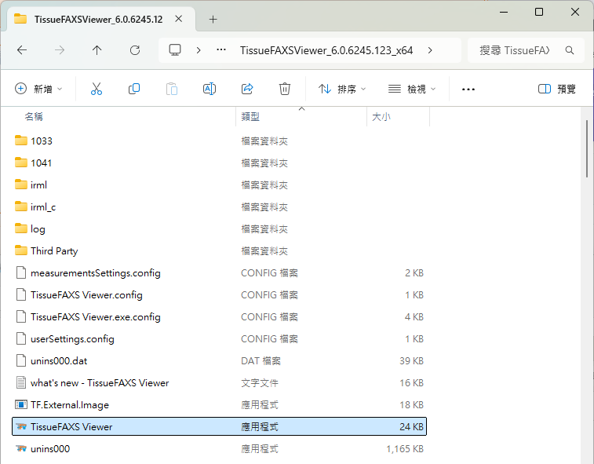
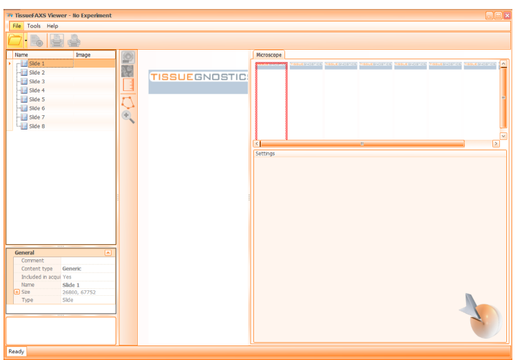

1 一、開啟檔案
步驟說明：
於 TissueFAXS Viewer 資料夾中點選開啟 TissueFAXS Viewer 執行檔案（應用程式）[cite: 1]。

▲ 圖 1-1：資料夾路徑與 TissueFAXS Viewer 執行檔標示[cite: 1]
2 二、開啟檔案與選取 Region
1. File Open
點選 File → Open... 選擇 000.aqproj 掃片檔案[cite: 1]。
備註： 除備份檔案（
.BKP）可刪除外，請勿更動內容檔案配置。

▲ 圖 2-1：開啟專案檔 (.aqproj) 與資料夾結構標示
2. 選擇欲處理的 region
於左側選單於目標 region 點擊兩次即可載入影像。

▲ 圖 2-2：雙擊左側清單載入指定 Region
3 三、功能鈕介紹

▲ 圖 3-1：頂部工具列功能配置圖
影像檢視縮放功能鈕
包含自訂縮放比例、100% 原尺寸 (1:1)、最佳觀察大小及全圖地圖顯示。
FOV 格線顯示
開啟或關閉 Field of View 網格邊界。
樣本範圍裁切顯示
顯示或遮罩特定檢視區塊。
比例尺顯示
開啟右下角比例尺（例如 400 μm）。
4 四、影像轉檔 SOP
1. Export FOVs images (轉出單張或多張 FOVs 影像)
- 選擇紅色標記旗幟，於影像視窗中點選欲個別轉檔之 FOVs（點選出現主旗 1 個 + 副旗 8 個九宮格排列）。
- 點選
Export→Export FOVs images。 - 設定存檔位置、檔名結構與圖片格式，點選
Save。

▲ 圖 4-1：Export FOVs Images 設定對話框與旗幟標記
2. Export region overview (轉出單張完整拼接全圖)
- 點選
Export→Export region overview。 - 於 Basic 基本頁面設定存檔位置、格式（JPG/BMP/PNG/TIFF）及壓縮比例。
- 於 Advanced 進階頁面可勾選標記比例尺 (Scale bar) 與呈現 Subregions 框選範圍。

▲ 圖 4-2：Export Region Overview 基本與進階設定
3. Export only overviews from categories (轉出指定圈選範圍拼接全圖)
- 點選
Subregions→Manage Categories新增框選組別與線條顏色。 - 使用固定框選工具或手動繪製工具（Polyline）圈選指定區域。
- 進入
Export region overview勾選Export only overviews from categories後匯出。

▲ 圖 4-3：圈選分組建立與特定區域全圖輸出